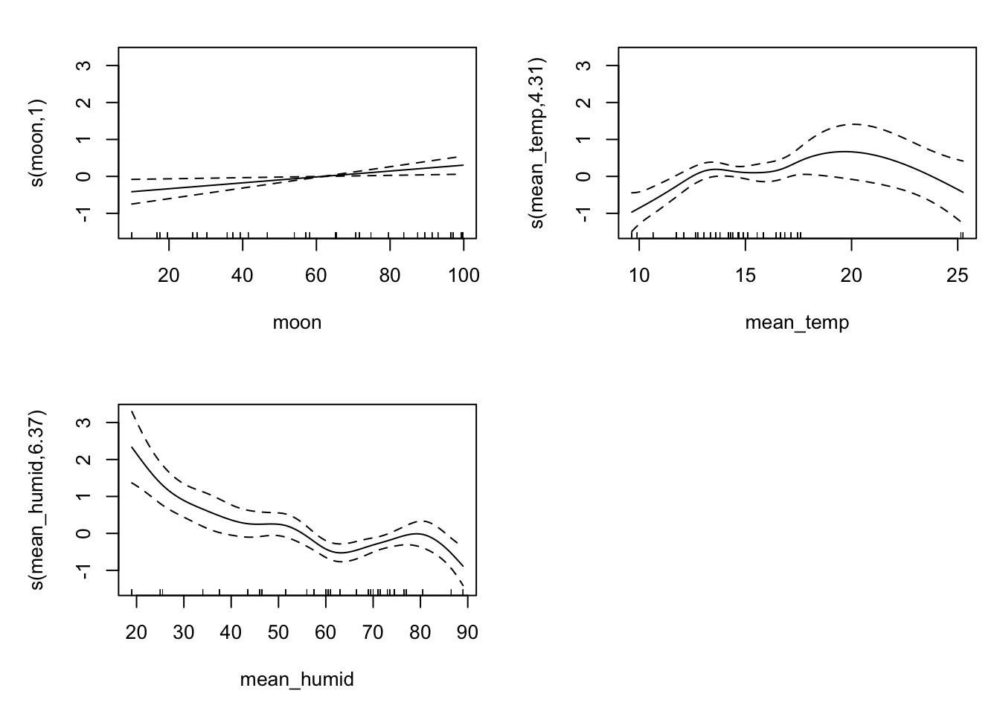

library(tidyverse)
articles <- read_csv("https://sta712-f26.github.io/class_activities/articles_small.csv")
m_art <- glm(art ~ phd + ment + kid5,
family = poisson, data = articles)Homework 7
Due: Friday, October 30, 11:59pm on Canvas
Homework grading and resubmissions: Homework will be graded on completeness, correctness, and effort. If you make an honest, good-faith effort attempt at a question, but your submitted work has some important errors or is missing a component I think is necessary, I may ask you to resubmit your work after receiving feedback. Your grade for that question would then be based on your resubmission.
Collaborators and AI statement: At the top of your assignment, list any collaborators (Dr. Evans does not count – he is a resource, not a collaborator), and provide an AI statement describing your use of AI to complete the questions. If you did not use AI in any way, let me know that too. If you did use AI, provide: the model used, the HW questions on which you used AI, and a summary of the ways in which AI provided assistance. As described in the syllabus, AI use is permitted on homework assignments, but submissions without a complete AI statement may not receive full credit.
Deviance, log likelihood, and AIC
For binary logistic regression, deviance is equal to -2 log likelihood. This is not true for all GLMs.
Recall that, in dispersion model form,
\[f(y; \mu, \phi) = b(y, \phi) \exp \left\lbrace -\frac{d(y, \mu)}{2 \phi} \right\rbrace\]
where \(b(y, \phi) = a(y, \phi) \exp\{t(y, y)/\phi\}\), with \[d(y, \mu) = 2(t(y, y) - t(y, \mu)) \hspace{1cm} t(y, \mu) = y\theta - \kappa(\theta)\]
So, the unit deviance can be written
\[d(y, \mu) = -2\phi \log f(y; \mu, \phi) + 2\phi \log b(y, \phi)\]
Deviance for a fitted model
Assuming \(\phi\) is known, then the total deviance for a fitted model, also called the residual deviance, is the sum of the unit deviances:
\[D(\mathbf{y}, \widehat{\boldsymbol{\mu}}) = \sum \limits_{i=1}^n d(Y_i, \widehat{\mu}_i) = -2 \phi \log L(\widehat{\boldsymbol{\mu}}) +2 \phi \sum \limits_{i=1}^n \log b(Y_i, \phi)\]
Now, notice that \(2 \phi \sum \limits_{i=1}^n \log b(Y_i, \phi)\) is a constant with respect to the data. So, for two different models fit on the same data (e.g., a full model and a reduced model), this constant \(2 \phi \sum \limits_{i=1}^n \log b(Y_i, \phi)\) will be the same, and the likelihood ratio test statistic is
\[-2(\log L(\widehat{\boldsymbol{\mu}}_{\text{reduced}}) - \log L(\widehat{\boldsymbol{\mu}}_{\text{full}})) = \frac{D(\mathbf{y}, \widehat{\boldsymbol{\mu}}_{\text{reduced}}) - D(\mathbf{y}, \widehat{\boldsymbol{\mu}}_{\text{full}})}{\phi}\]
Example: binary logistic regression
For the Bernoulli distribution, we showed in class that \(\phi = 1\) and \(a(y, \phi) = 1\), and
\[t(y, y) = y \log(y) + (1 - y) \log(1 - y) = 0\] (using the convention that \(0 \log(0) = 0\)). Therefore, \(b(y, \phi) = 1\), and so
\[d(y, \mu) = - 2 \log f(y; \mu, \phi)\] For a fitted logistic regression model, this means that \(D(\mathbf{y}, \widehat{\boldsymbol{\mu}}) = -2 \log L(\widehat{\boldsymbol{\mu}})\).
AIC
The AIC for a fitted model is
\[\text{AIC} = -2 \log L + 2p\]
In the case of binary logistic regression, this is the same as \(\text{deviance} + 2p\), but in the case of other regression models the constant \(\sum \limits_{i=1}^n \log b(Y_i, \phi)\) may be non-zero.
For example, consider a Poisson regression model on the articles data:
m_art$aic[1] 3336.808m_art$deviance + 2*4[1] 1669.067To compute the AIC, we need to compute the \(-2 \log L\).
Poisson regression
For a Poisson regression model, we previously found that \(\phi = 1\), \(a(y, \phi) = 1/y!\), and \(t(y, y) = y \log(y) - y\). So,
\[b(y) \equiv b(y, \phi) = \frac{\exp\{y \log(y) - y\}}{y!}\]
Insect attraction to light
The data for this assignment come from a study which investigates whether insects are more or less attracted to different types of light sources at night. Different types of electric lights emit different wavelengths of light, and it is possible that some may be more attractive to insects, which may disrupt normal insect behavior or cause their death.
The researchers in this study conducted an experiment in which six light traps were set up each night at each of three different locations. Each trap contained a different light source, and the traps were checked the following morning to count the number of insects caught. The experiment was repeated across multiple nights, and the researchers also recorded information about the moon phase, temperature, and humidity each night.
Data
The data can be loaded into R with:
library(tidyverse)
bug_data <- read_csv("https://sta712-f26.github.io/class_activities/bug_attraction.csv")The following variables are included:
Location: Location the light trap was placed.BG= botanical garden,LK= La Kretz field station,Stunt= stunt ranch.light_type: Type of light bulb used to attract insects.Nomeans no bulb at all;A,B, andCare all Philips light bulbs whose color can be adjusted by the user;LEDis a commercial white LED bulb; andCFLis a commercial compact fluorescent bulb.moon: Percentage of moon visible (moon phase).mean_temp: Mean temperature (Celsius)mean_humid: Mean humidity (%)Total: Total number of insects captured in the trap
Your task
Your task is to address the main research question: are some types of light more attractive to insects?
The questions below will guide you through parts of this task.
Questions
Initial Poisson model
Diagnostics
The diagnostic plots suggest that some model assumptions may not be satisfied. To assess whether this is due to random chance or model mis-specification, we can use parametric bootstrapping.
Modifying the model
Model diagnostic suggest that the Poisson distribution may be a poor choice for our model. There may also be issues with the shape assumption, but let’s fix the distribution first.
Answering the research question
Alternative: GAM
Sometimes, the shape assumption may not be satisfied, but the usual transformations (log, square root, polynomial, etc.) just don’t seem to help.
In those situations, we may want something a little more flexible. A generalized additive model expands on generalized linear models by using smooth terms for selected quantitative explanatory variables. The model looks like this:
\[ \begin{aligned} Y_i | \mathbf{x}_i &\sim EDM(\mu_i, \phi) \\ g(\mu_i) &= \beta_0 + f_1(\mathbf{x}_{i1}) + f_2(\mathbf{x}_{i2}) + \cdots + f_p(\mathbf{x}_{ip}) \end{aligned} \]
where the functions \(f_1,...,f_p\) are smoothers: flexible functions that are not constrained to have a particular parametric form, but which are assumed to be sufficiently “smooth” (e.g. constraints on the second derivative).
This is called an additive model because the effects \(f_j(\mathbf{x}_{ij})\) are assumed to be additive – we don’t have some arbitrary joint function \(f(\mathbf{x}_{i1},...,\mathbf{x}_{ip})\) (which would be very hard to fit!).
The assumption of additivity gives a good bias-variance tradeoff: it allows us more flexibility (decreasing bias) without too great an increase in variance. And often, the assumption of additivity is sufficient for our modeling purposes.
Example
GAMs can be fit in R with the mgcv package, which will also automatically select the tuning parameters needed to fit the smoothers \(f_1,...,f_p\).
Here is an example of fitting a negative binomial GAM to the bug_data data:
library(mgcv)
bug_gam <- gam(Total ~ light_type + Location +
s(moon) + s(mean_temp) + s(mean_humid),
data = bug_data, family = nb())
summary(bug_gam)
Family: Negative Binomial(2.678)
Link function: log
Formula:
Total ~ light_type + Location + s(moon) + s(mean_temp) + s(mean_humid)
Parametric coefficients:
Estimate Std. Error z value Pr(>|z|)
(Intercept) 3.7023 0.1407 26.305 <2e-16 ***
light_typeB -0.4098 0.1651 -2.482 0.0131 *
light_typeC -0.2909 0.1644 -1.769 0.0768 .
light_typeCFL 0.3018 0.1618 1.866 0.0621 .
light_typeLED -0.2642 0.1659 -1.593 0.1112
light_typeNo -1.8449 0.1821 -10.131 <2e-16 ***
LocationLK -0.3073 0.1951 -1.575 0.1152
LocationStunt -1.5676 0.1856 -8.446 <2e-16 ***
---
Signif. codes: 0 '***' 0.001 '**' 0.01 '*' 0.05 '.' 0.1 ' ' 1
Approximate significance of smooth terms:
edf Ref.df Chi.sq p-value
s(moon) 1.001 1.001 6.184 0.012928 *
s(mean_temp) 4.312 5.104 23.464 0.000307 ***
s(mean_humid) 6.371 7.463 41.161 < 2e-16 ***
---
Signif. codes: 0 '***' 0.001 '**' 0.01 '*' 0.05 '.' 0.1 ' ' 1
R-sq.(adj) = 0.669 Deviance explained = 71.8%
-REML = 737.7 Scale est. = 1 n = 191Notice that the output has separate sections for the parametric coefficients and the smooth terms.
We can look at the shape of the smooth terms by plotting the GAM fit:
plot(bug_gam, pages=1)
The fit suggests that the relationship with moon really could be linear, and for mean_temp we may be worried about the outliers near 25.